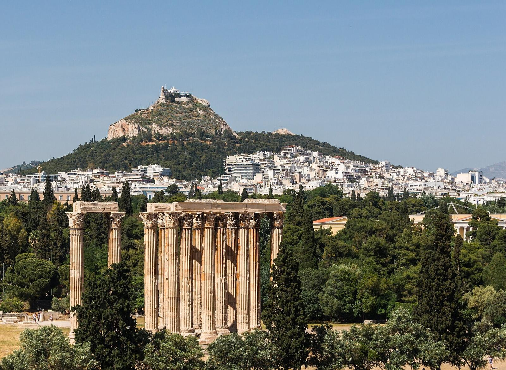
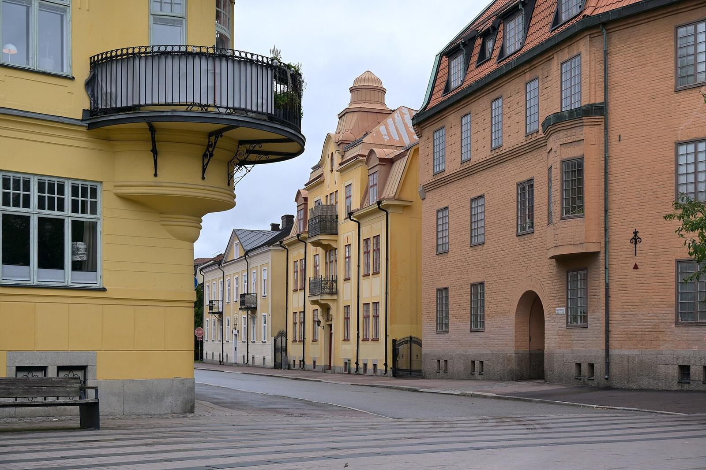
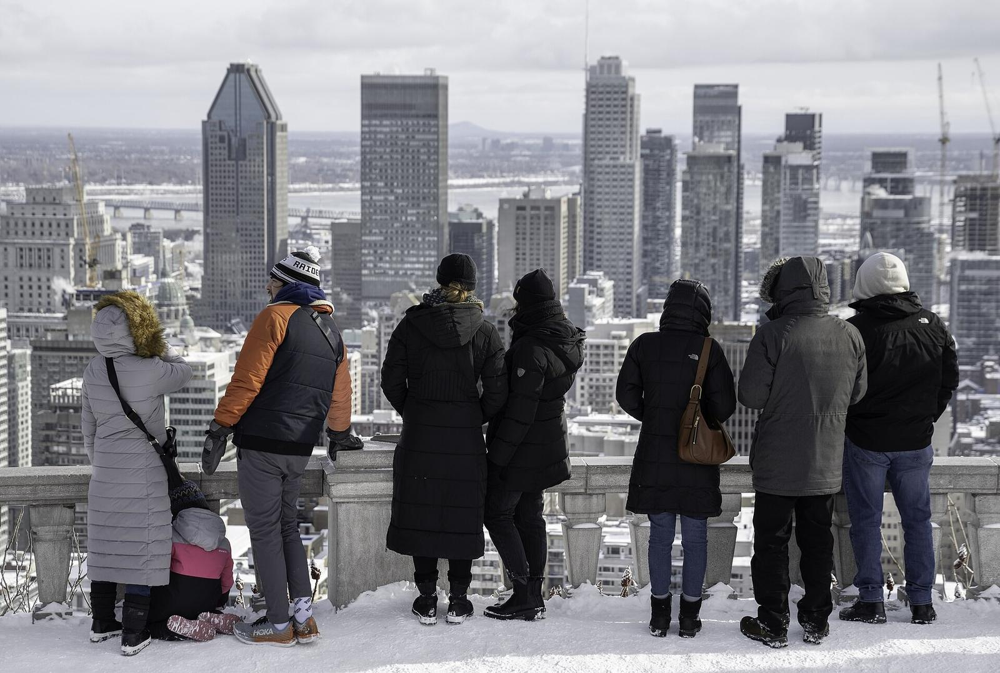
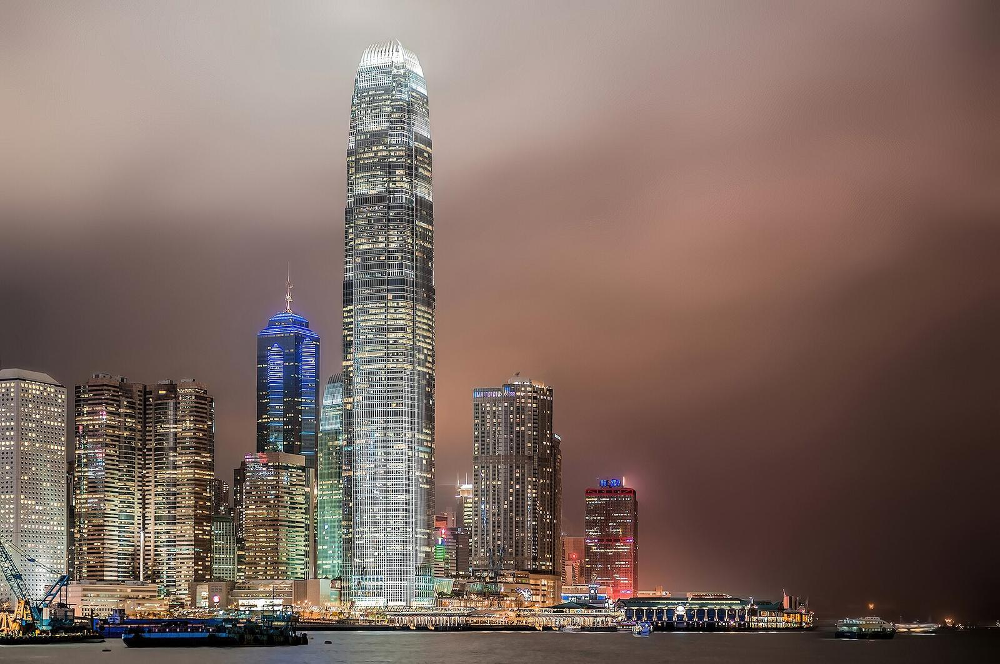

Gratuit« Tout ce qui se passe, rien de ce qui se dit »N° 128
La Gazette de {{SITE}}
Édition de la semaineHebdomadaire de quartierFondé en {{YEAR}}
Patrimoine
Les réverbères de 1890 restaurés
Un artisan du quartier a passé deux ans sur les quarante luminaires de la place.

Ailleurs
Carnet de route : une semaine à Athènes
Notre correspondante revient d'Athènes avec des colonnes, du soleil et beaucoup de marches.

Ville
La rue jaune, la plus photographiée de la ville
Pourquoi tout le monde s'arrête devant ces façades.

Urbanisme
Vu d'en haut : le belvédère rouvre
Un nouvel escalier, une vue retrouvée sur les toits et la baie.

